King Geedorah Imam slicni ali mi problem radi ovaj neocjenjeno stupac kada nema studenata ali on svejedno to racuna kao jedan neocjenjen/jedna null vrijednost 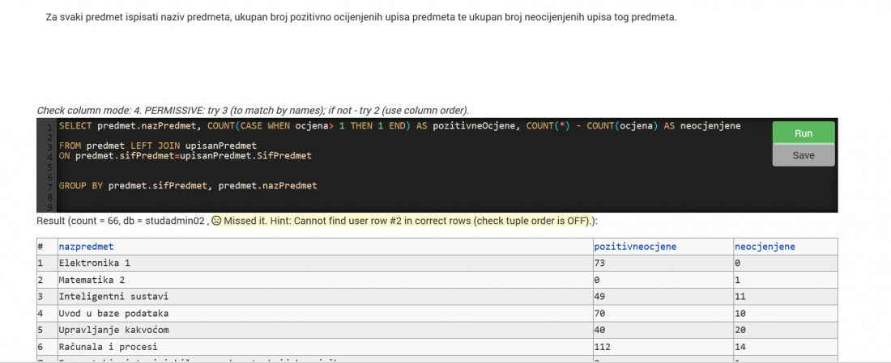
laranotreallycroft Meni to nije problem, mislim da je meni problem sto mi COUNT vraca NULL umjesto da mi vrati 0. Usporedjivao sam ovaj ispis s bazom i funkcije tocno prebroje ocjene, osim tog NULL koji se pojavi (a ne znam kako je uopce moguce da COUNT vrati NULL).
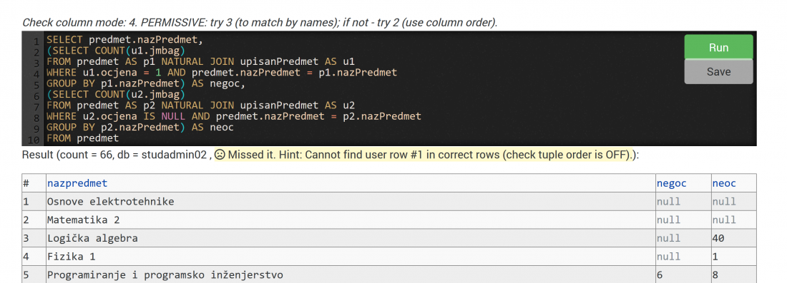
King Geedorah
laranotreallycroft ja sam ovak rijesio taj 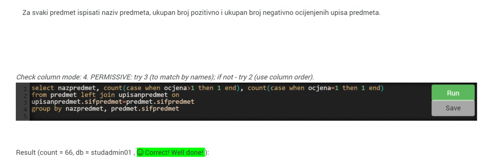
King Geedorah agregatna funkcija COUNT(*) vraća i NULL elemente (ukoliko ti to pomaže)
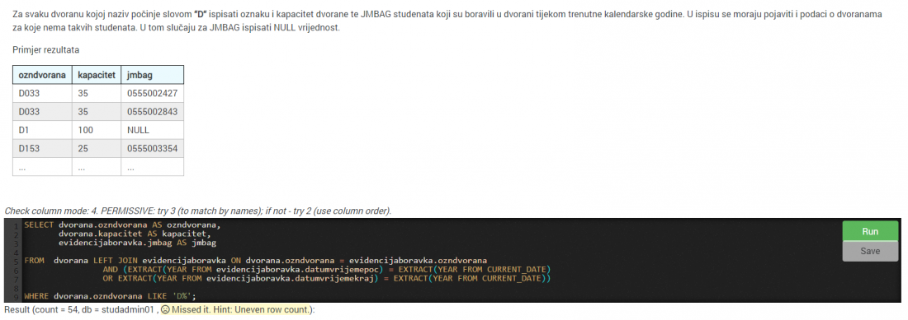 Jel zna netko ovaj, ja sam vec probao ovo ali nije tocno 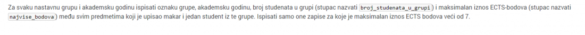 I ako netko ima rjesenje na ovaj drugi
stjepan ako nekog jos muci ovaj zadatak, potrebno je ime staviti prije prezimena iako je u zadataku receno prezime pa ime, ostalo sve u ovom rijesenju je dobro
Rene
stjepan U zadatku traze jmbag, prezime i ime ali rješenje bude tocno kada ispises jmbag, ime pa prezime. RIP 2 sata sinoc
Za zadanu relacijsku shemu studbor promaja Evo ja sam riješila! mornar Ica Mislim da moraš imati isti poredak atributa u select kao i u create table 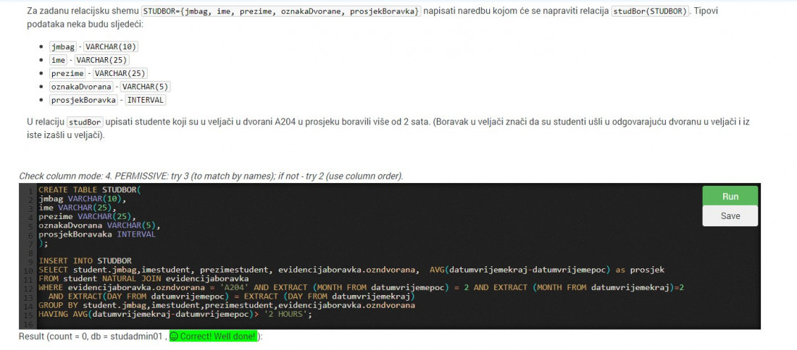
Potrebno je dodati novu organizacijsku jedinicu "Republika 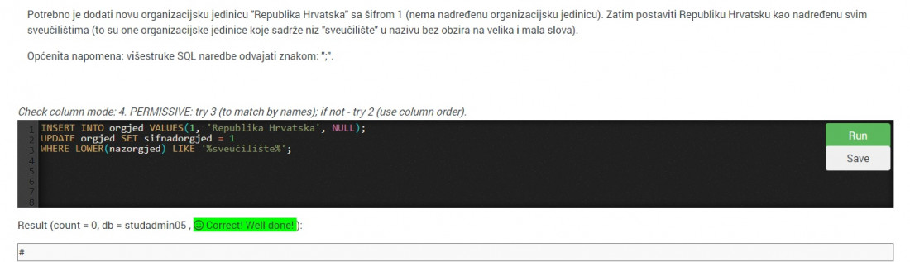 Ispisati nazive predmeta (samo jednom) 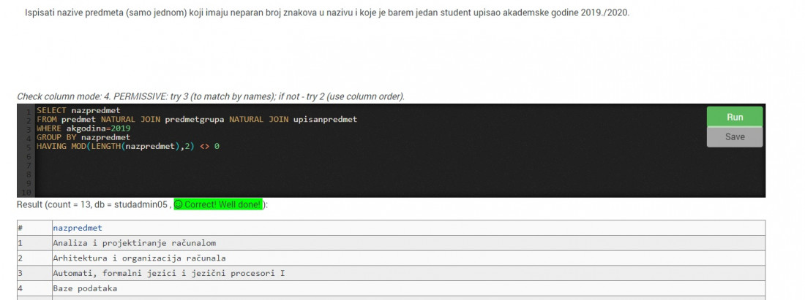 Ispisati šifru, prezime i ime nastavnika 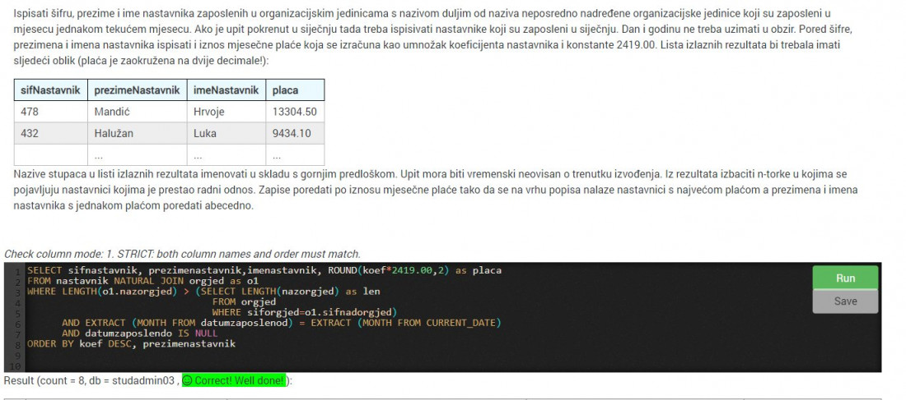 Ispisati jmbag, ime i prezime svih studenata rođenih 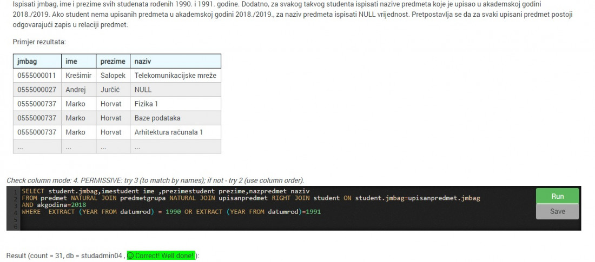
Ollie ne znam, prepravio sam to no i dalje je nešto krivo
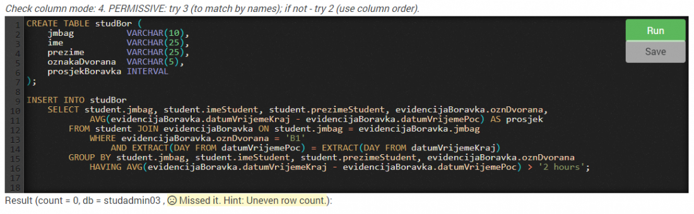
Zna li netko ova dva? 1.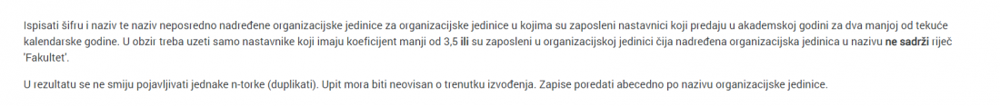 2.
Giovanni jesi uspija rijesit drugi
mornar Ica nevermind, našao sam banalnu grešku (napisao drugi put B1 umjesto B4 😐)
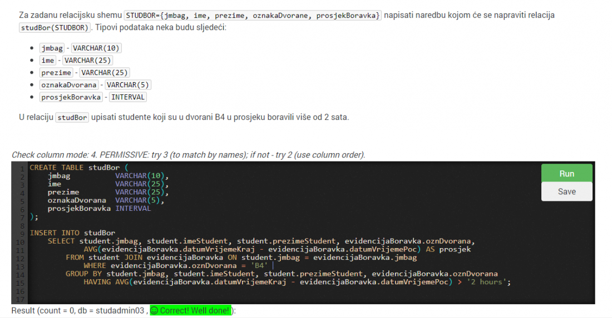
evo mojih ostalih odgovora
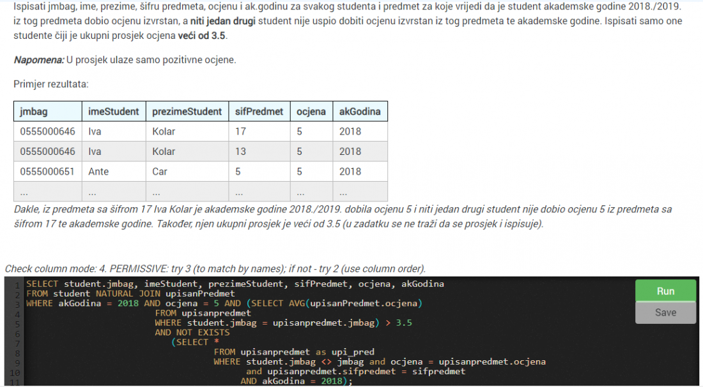
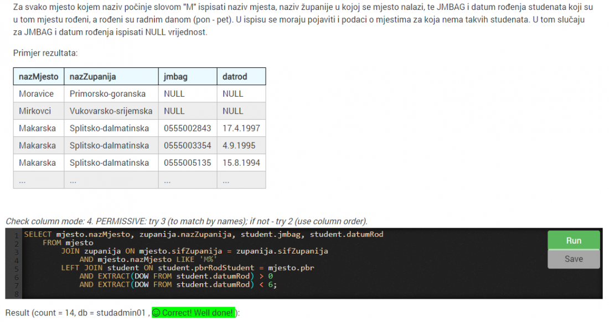
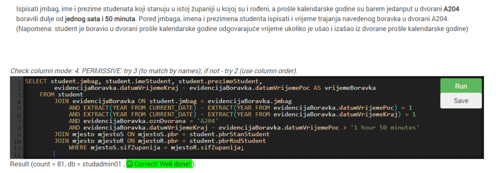
Moze pomoc? 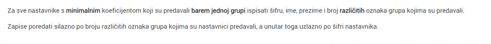
mamaRu 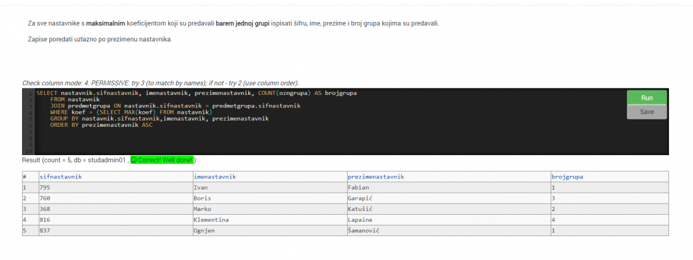 Moje rjesenje, u tvom zadatku treba promjeniti MAX u MIN, COUNT(ozngrupa) AS brojgrupa u COUNT(DISTINCT ozngrupa) AS brojgrupa, i staviti ORDER BY brojgrupa DESC, sifnastavnik ASC ako se ne varam
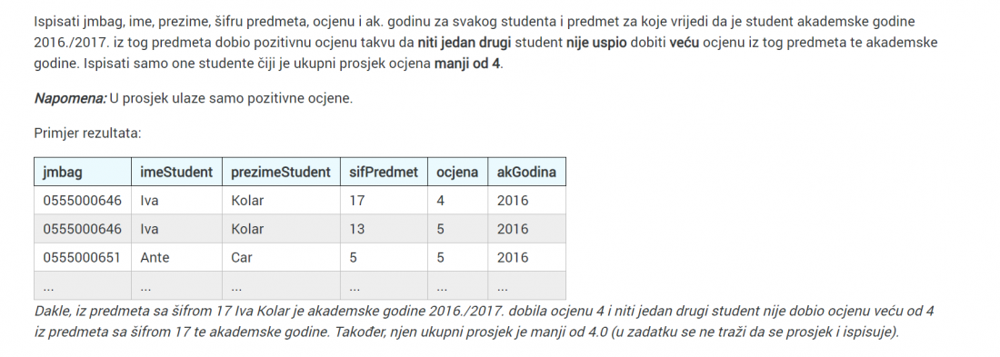 Ima tko…?
kerovac jesi uspio rijesit? Imam isti taj i nemam pojma kak
Može pomoć gdje griješim? 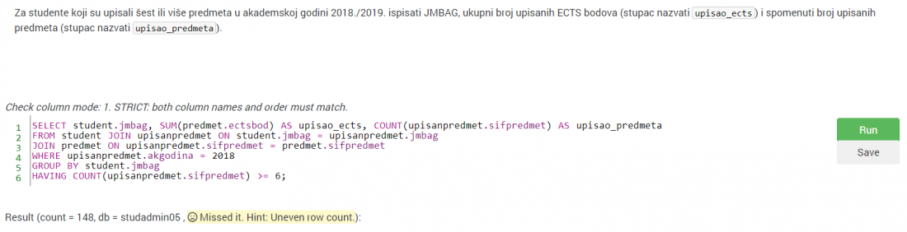
I ideju za ovo..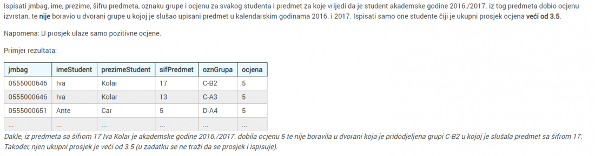
misternoubodi ideja za ovaj drugi je:
ozndvorana NOT IN ( SELECT ozndvorana FROM evidencijaboravka WHERE EXTRACT(year FROM datumvrijemepoc) BETWEEN 2016 and 2017 AND student.jmbag=jmbag)
misternoubodi jesi uspio ovaj prvi?
Ovoga nisam vidio da je netko stavio
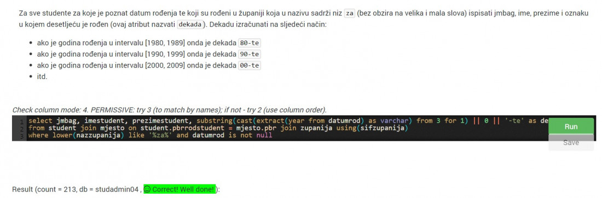
Zna li netko ovaj?
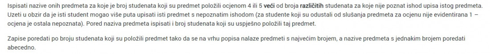
Umarell imam isti zadatak, isto ne radi, evo sto imam za sad 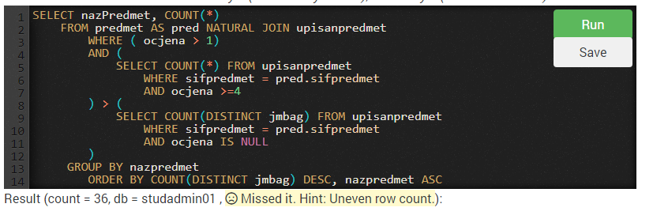
evo moji zadatci TOPPREDMET
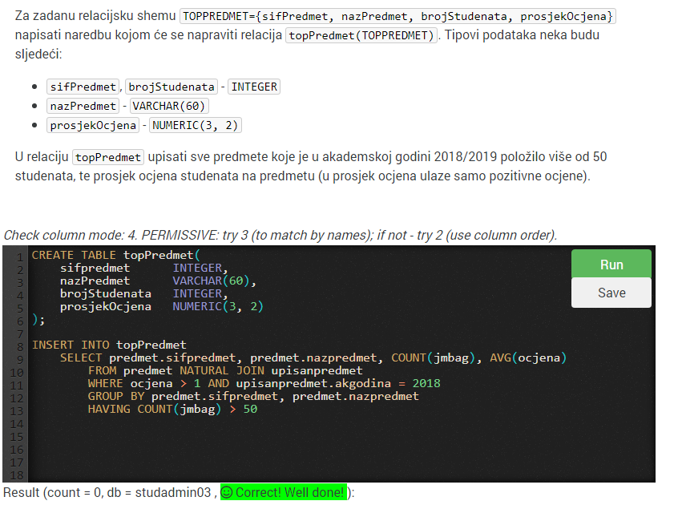
studentu prosao rodendan, nepoznati mjesto stanovanja i/ili rodenja
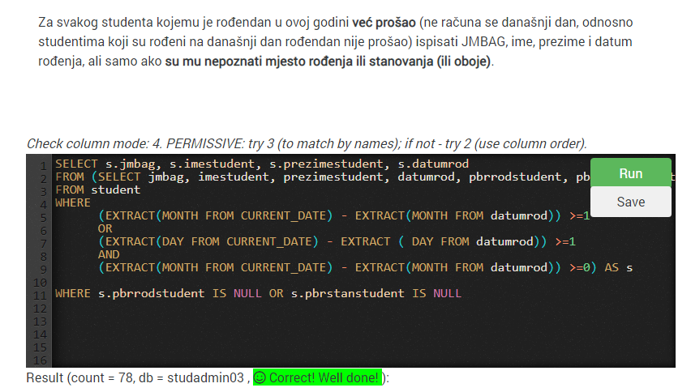
republika hrvatska nadredena sveucilistima
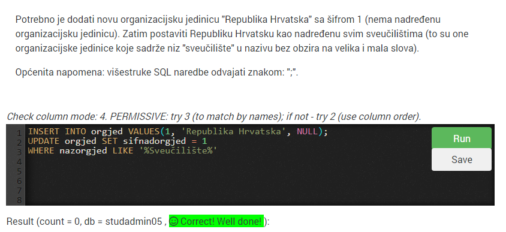
svaka nastavna grupa i akademska godina, ects > 7
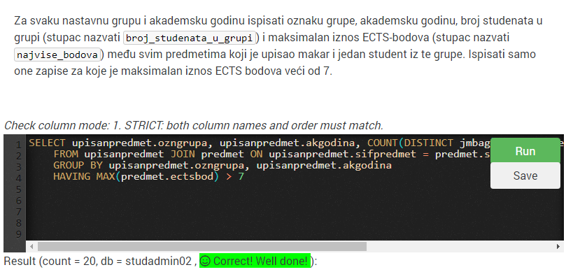
lup jel mozes pls slikat ovaj desni dio cetvrtog zadatka(ovaj dio koji je prekriven gumbom Run)